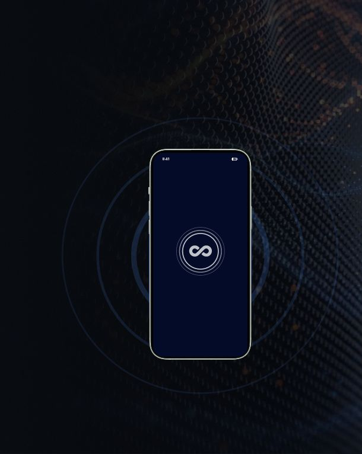

At login
One tap signs you in to every enabled service
Where it adds resistance
- Phishing
- MFA relay and fatigue
In collaboration with

At login
One tap signs you in to every enabled service
Where it adds resistance
Continuously
Authenticate periodically for shorter session token duration
Where it adds resistance
At sensitive actions
On demand authentication prevents lateral movement
Where it adds resistance

Request access to Wavekey